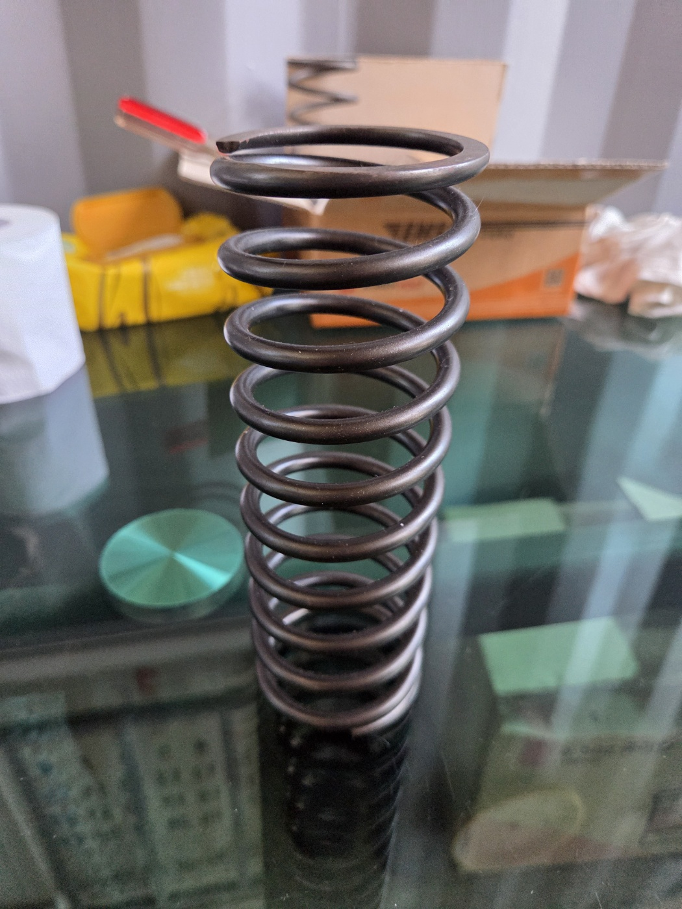
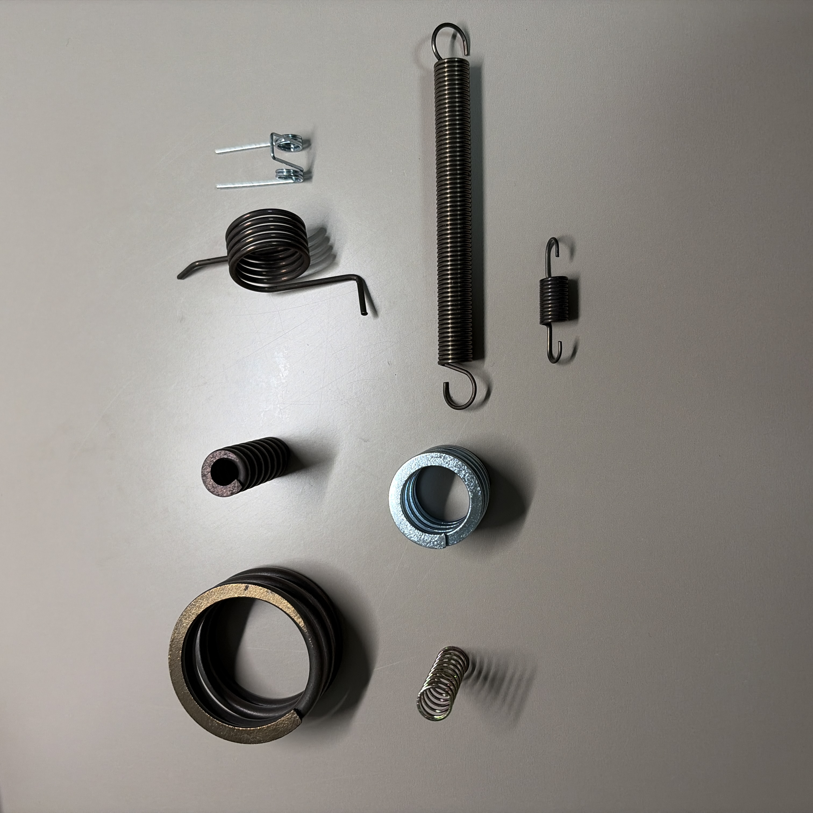

연삭 분진 상대 지수
100 → 33
모델 예측 · 기준 대비 67% 감소
코일 스프링 제조공정 분석
공장 견학에서 확인한 8개 생산공정을 바탕으로 연삭, 쇼트피닝, 열처리의 개선 방향을 살펴봤다. 현장 자료와 시뮬레이션을 통해 기존 조건과 개선 조건을 비교한다.
스프링은 자동차와 산업기계에서 흔히 볼 수 있는 부품이다. 하지만 실제 제조 과정은 선재를 감는 것만으로 끝나지 않는다. 제품에 따라 열처리, 끝면 연마, 쇼트피닝, 표면처리 등을 거쳐야 한다.
우리 조는 이 과정이 실제 공장에서 어떻게 이어지는지 확인하기 위해 스프링 제조업체를 방문했다. 현장에서 본 설비와 담당자의 설명을 토대로 공정 흐름을 정리하고, 개선이 필요한 부분도 함께 살펴봤다.
중간보고서에서는 연삭 분진과 소음을 주요 문제로 다뤘다. 이후 쇼트피닝과 열처리까지 검토 범위를 넓혔다.
11월 26일 팀원이 제작한 Spring Lab과 최종보고서 초안을 공유받았다. 문헌 기반 모델의 기존 조건과 개선 조건을 비교하고, 실제 적용 가능성과 한계를 정리하는 단계다.
현장에서 크기와 형상이 다른 여러 스프링을 볼 수 있었다. 같은 코일 형태라도 사용되는 곳에 따라 선경, 코일 직경, 길이, 표면 상태가 달랐다.
스프링은 외력을 받으면 변형되고, 힘이 제거되면 원래 형상으로 돌아가려는 복원력을 낸다. 이때 필요한 하중과 변위가 제품마다 다르므로 소재와 형상뿐 아니라 제조조건도 함께 관리해야 한다.
| 조사 범위 | 코일 스프링의 기본 제조공정 |
|---|---|
| 주요 기능 | 하중 전달, 복원력 제공, 충격 흡수 |
| 주요 관리 항목 | 선경, 코일 직경, 길이, 하중–변위 특성 |
| 소재·치수·허용오차 | 콘트롤 스프링 SWP-B, 선경 3.20 mm (최종보고서 초안) |


최종보고서 초안에서는 실제 콘트롤 스프링(SWP-B) 공정과 해석용 SWOSC-V 기준 모델을 구분한다. 해석 모델은 선경 4 mm, 평균 코일 직경 25 mm, 유효 권수 6으로 설정했다.
9월 21일 공장을 방문해 코일 성형기와 열처리 설비, 양 끝면 연마기, 검사 장비 등을 살펴봤다. 아래 사진은 견학 때 촬영한 장비와 제품을 정리한 것이다. 사진을 누르면 크게 볼 수 있다.
제공된 현장 영상 중 코일 성형 장면 두 개를 웹에서 보기 편한 크기로 줄였다. 영상만으로 장비 설정값이나 생산속도를 판단하지는 않았다.
사진·영상: 팀 제공 현장 자료. 공개 게시 전 업체의 촬영·공개 허용 범위를 확인해야 한다.
최종보고서 초안의 콘트롤 스프링(SWP-B) 제조공정도를 기준으로 정리했다. 아래 공정 번호를 선택하면 해당 공정만 표시된다.
현장에서 본 시험기는 스프링에 하중을 가하면서 변위를 측정하는 장비였다. 제품을 지정된 길이만큼 압축했을 때 얼마의 힘이 필요한지 확인하는 데 쓰인다. 검사 결과를 성적서로 출력해 납품처에 제출할 수 있다는 설명도 들었다.
또한 바로 양산에 들어가기보다 먼저 샘플을 만들고 검사한 뒤 생산을 진행한다는 점을 확인했다. 다만 제품별 합격 기준이나 허용오차는 아직 확보하지 못했다.
선경, 코일 직경, 자유장 등
지정 변위에서의 하중 확인
높이, 평탄도, 직각도 확인 필요
성적서와 합격 기준 조사 예정
11월 26일 공유받은 최종보고서 초안의 시뮬레이션 결과다. 현장 실측값이나 양산 검증 결과가 아니다.
| 항목 | 기준 모델 | 개선 모델 |
|---|---|---|
| 연삭 분진 지수 | 100 | 33 |
| 시간당 생산량 | 5,000개 | 5,000개 |
| 피로수명 | 316만 회 | 553만 회 |
| 표면 거칠기 Ra | 4.6 μm | 3.8 μm |
| 열처리 불량률 | 14% | 0% |
| 경도 | 568 HV | 568 HV |
분진 지수는 상대 지표이며 실제 작업장 분진 농도가 아니다. 생산량 유지 및 불량률 0%는 모델 가정에 따른 예측이다. 문헌의 시험 조건과 현장 조건 차이, 실제 설비 적용 가능성은 발표 전 확인해야 한다.
Spring Lab에서 비교하기 →숫돌 회전 방향을 작업자 반대쪽으로 바꾸고 회전수를 1,300에서 1,010 rpm으로 조정하는 안을 검토했다. 하향 이송 속도는 1.0 mm/분으로 유지하는 모델이다.
회전 방향 변경 가능 여부, 가드 구조, 숫돌 마모와 실제 가공시간을 확인해야 한다.
단일 피닝과 이중·스트레스·온간 피닝을 비교했다. 초안에서는 요구 수명 500만 회를 만족하는 이중 피닝을 제안한다.
강구 교체와 추가 투사 시간, 피닝 조건 및 실제 피로시험 검증이 필요하다.
해석 기준 온도 360°C에서 380°C로 변경하고 핫세팅을 추가하는 조건을 비교했다. 유지 시간은 20분이다.
현장 SWP-B의 340°C 조건과 해석용 SWOSC-V 조건은 서로 다르다. 핫세팅에 필요한 설비와 실제 온도 편차도 검토해야 한다.
현재는 제안 및 시뮬레이션 단계로, 개선 조건을 실제 생산라인에 적용했다는 의미는 아니다.
정량 비교 보기 →업체에 처음 연락한 날부터 견학, 보고서 작성, 웹사이트 정리까지 날짜별로 기록했다. 완료한 활동과 앞으로의 작업을 구분해 두었다.
최종 발표는 12월 7일(월)로 확정되었다. 최종보고서 제출은 기존 과제 일정인 12월 14일을 기준으로 한다.
11월 26일 공유받은 팀원 제작 프로그램. 연삭 분진, 쇼트피닝, 열처리 및 스프링 설계의 조건을 변경하고 기준 A와 현재 B를 비교할 수 있다.
별도 설치 없이 브라우저에서 실행한다. 발표에서는 PC 전체 화면을 권장한다.
Spring Lab 실행 ↗프로그램에 포함된 논문 근거 및 모델 가정은 별도로 검토해야 한다. Windows 실행 파일은 웹 배포본에 포함하지 않았다.
중간보고서와 최종 결과보고서 초안을 구분해 관리한다.
현장 견학, 8개 제조공정, 연삭 문제 및 향후 조사 계획.
파일 공개 확인 후 등록공정별 상세 조건, 세 가지 개선안, 시뮬레이션과 정량 비교.
파일 공개 확인 후 등록팀 검토와 발표 피드백 반영 후 등록할 예정이다.
보고서 원본에는 팀원 학번과 업체 내부 자료가 포함될 수 있다. 공개용으로 정리한 파일을 reports 폴더에 올리고 HTML의 REPORT_FILES 설정을 켜면 열람 링크가 활성화된다.